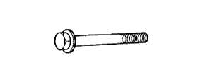

МАСЛЯНЫЙ НАСОС > СНЯТИЕ > Подготовка
|  |
|
SST
| 09213-54015
| Приспособление для блокировки шкива коленчатого вала
| 
| (91651-60855)
| Болт
| 
| 09330-00021
| Приспособление для блокировки соединительного фланца
| 
| 09950-50013
| Набор универсальных съемников С
| 
| (09951-05010)
| Траверса 150
| 
| (09952-05010)
| Подвижный блок
| 
| (09953-05010)
| Центровочный болт 100
| 
| (09954-05021)
| Захват № 2
| |
|
SSMФирменный герметик Seal Packing Black от компании Тойота, Three bond 1207B или аналогичный
| -
| Фирменный герметик Toyota 1344, Three Bond 1344 или аналогичный
| -
| |
|
ОБОРУДОВАНИЕКонтейнер
| -
| Датчик давления масла
| -
| Прецизионная поверочная линейка
| -
| Защитная клейкая лента
| -
| Динамометрический ключ
| -
| Деревянный брусок
| -
| |
|
РЕКОМЕНДУЕМЫЕ ИНСТРУМЕНТЫ
| 09011-2C570
| Торцевой ключ 27 мм
| -
| 
| 09012-2C520
| Удлиненная торцевая головка 24 мм
| -
| 
| 09082-00040
| Электрический диагностический прибор TOYOTA
| -
| 
| 09091-1C100
| Инструмент для обрезки прокладки масляного поддона
| -
| |
|
СМАЗОЧНЫЕ МАТЕРИАЛЫ / Стандартный класс масла по степени вязкостиКласс масла по степени вязкости
| Вязкость масла (SAE)
| Универсальное моторное масло API сорт SL "Energy-Conserving", SM "Energy-Conserving" или ILSAC
|
5W-30
10W-30
| Универсальное моторное масло API сорт SL или SM
|
15W-40
20W-50
|
СМАЗОЧНЫЕ МАТЕРИАЛЫ / Номинальный объемПараметр / Устройство
| Заданные условия
| Слив и заполнение без замены масляного фильтра
| 5,0 литра (5,3 кварты США, 4,4 английской кварты)
| Слив и заполнение с заменой масляного фильтра
| 5,7 литра (6,0 кварты США, 5,0 английской кварты)
| Заполнение сухой системы
| 6,1 л (6,4 кварты США, 5,4 английской кварты)
| |
|